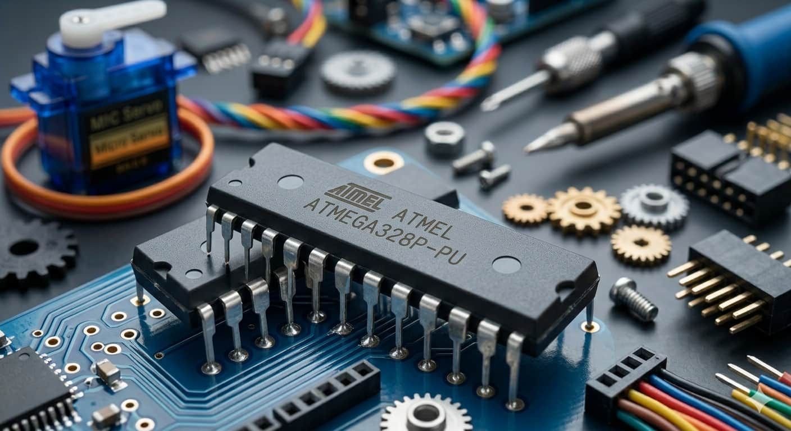
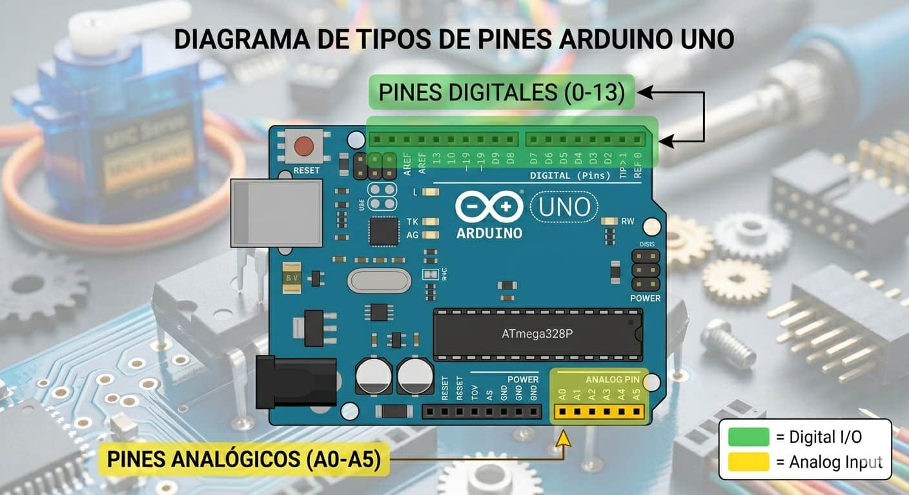
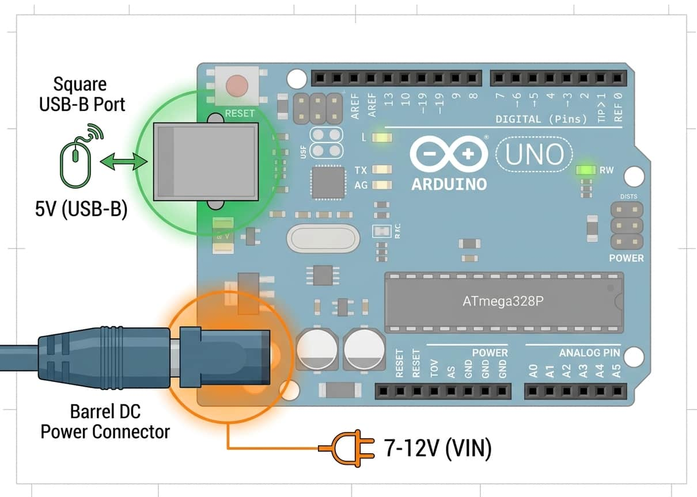
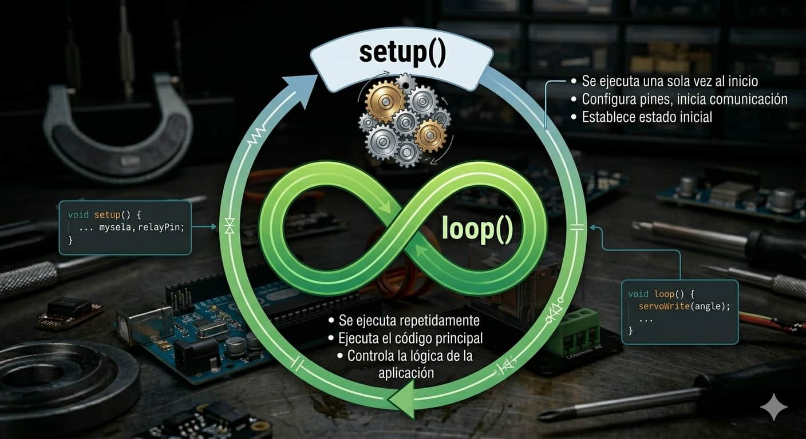
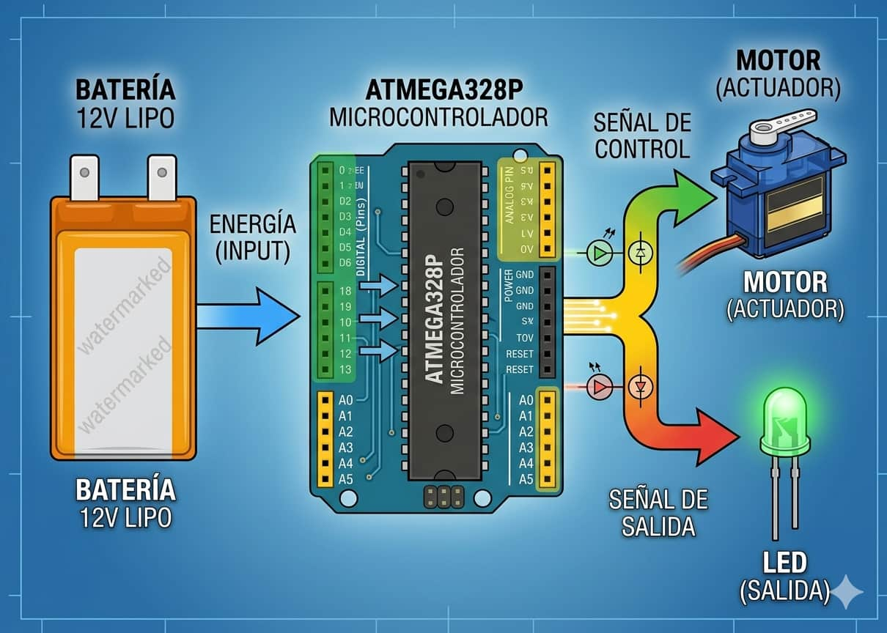

Microcontrolador ATmega328P

Es el corazón de la placa; el chip negro rectangular encargado de ejecutar todas las instrucciones de procesamiento lógico.

El Arduino Uno es una placa de desarrollo de código abierto. Imagínala como una pequeña computadora diseñada para recibir información de sensores, tomar decisiones y enviar órdenes precisas a los actuadores para controlar cualquier sistema.

Es el corazón de la placa; el chip negro rectangular encargado de ejecutar todas las instrucciones de procesamiento lógico.

Cuenta con pines digitales para estados binarios (encendido/apagado) y pines analógicos para lecturas de voltajes variables.

Se alimenta vía USB (5V) o fuente externa (7-12V). Su memoria flash de 32KB es suficiente para programas de automatización.

Arduino funciona mediante un ciclo infinito. Al encenderse, ejecuta una configuración inicial y luego repite tus instrucciones constantemente. Analogía: Es como un director de orquesta; observa al público (sensores) y coordina el movimiento de las manos (actuadores) siguiendo una partitura estricta.
La placa es la central de mando donde convergen todos tus componentes electrónicos para formar un circuito unificado.

El direccionamiento de señales se organiza de forma sencilla:
Descubre el potencial de tu placa y cómo dar tus primeros pasos en el desarrollo de hardware: